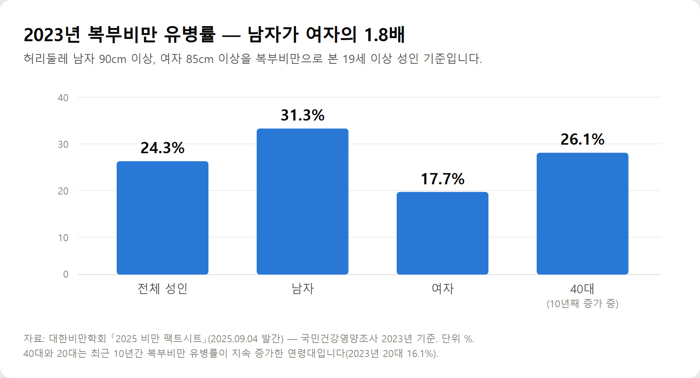
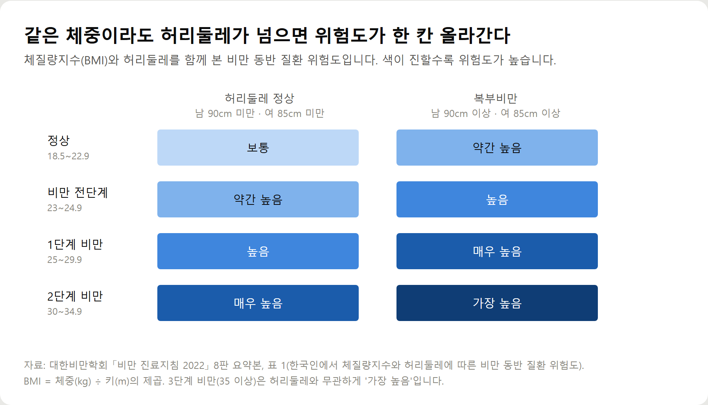
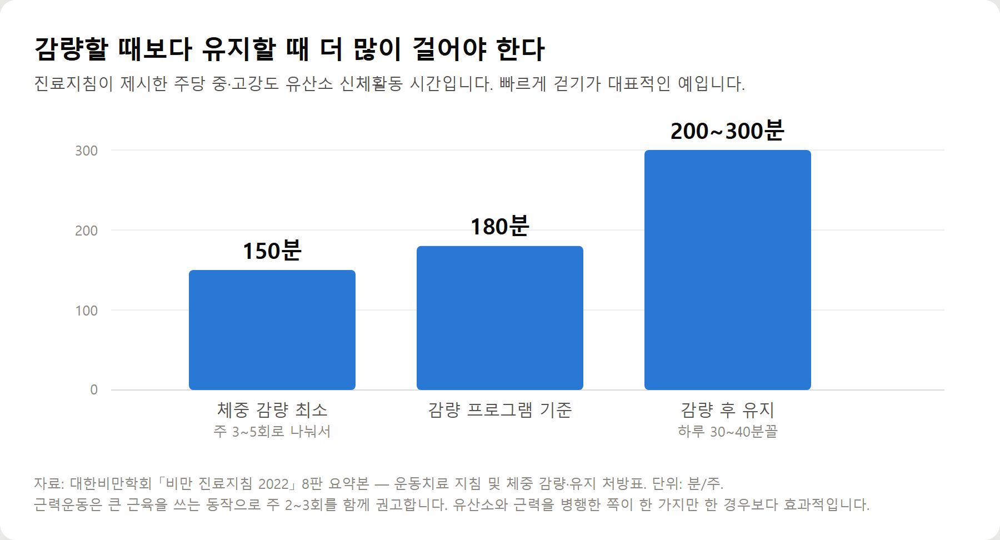

<meta charset="utf-8">
<title>중년 복부비만 — 허리둘레 기준과 40·50대 관리 — 나의 투자 그리고 행복한 여행</title>
<meta name="description" content="40대·50대 뱃살이 안 빠지는 이유와 복부지방·내장지방 관리법. 허리둘레 기준, 대사증후군 수치, 운동·식사 권고를 대한비만학회 진료지침으로 정리했습니다.">
<meta name="viewport" content="width=device-width, initial-scale=1">
<link rel="canonical" href="https://worldtraveler1.tistory.com/102">
<link rel="preconnect" href="https://fonts.googleapis.com">
<link rel="preconnect" href="https://fonts.gstatic.com" crossorigin>
<link rel="stylesheet" href="https://fonts.googleapis.com/css2?family=Hahmlet:wght@400;600;800&family=IBM+Plex+Mono:wght@400;500&family=IBM+Plex+Sans+KR:wght@300;400;500;600&display=swap">

<style>
  :root{
    --paper:#F2EEE6;--surface:#FAF8F3;--surface-2:#E7E1D5;
    --ink:#191510;--ink-2:#4A4235;--ink-3:#7D7364;
    --line:#D6CEBF;--line-soft:#E4DDD0;--accent:#B06A15;--accent-bright:#C2761A;
    --up:#E5484D;--down:#3B82F6;
    --f-display:"Hahmlet",'Nanum Myeongjo',"Apple SD Gothic Neo",serif;
    --f-body:"IBM Plex Sans KR","Apple SD Gothic Neo","Malgun Gothic",sans-serif;
    --f-mono:"IBM Plex Mono","SFMono-Regular",Consolas,monospace;
    --pad:clamp(20px,5vw,64px);
  }
  @media (prefers-color-scheme:dark){
    :root:not([data-theme="light"]){
      --paper:#0B1120;--surface:#121A2C;--surface-2:#1A2439;
      --ink:#E9EEF7;--ink-2:#A9B5C9;--ink-3:#72809A;
      --line:#26314A;--line-soft:#1D2739;--accent:#E8A33D;--accent-bright:#F0B45C;
    }
  }
  *{box-sizing:border-box;}
  body{margin:0;background:var(--paper);color:var(--ink);font-family:var(--f-body);
    font-weight:300;font-size:1rem;line-height:1.75;-webkit-font-smoothing:antialiased;}
  a{color:inherit;}
  img{max-width:100%;height:auto;}
  .wrap{max-width:760px;margin:0 auto;padding-inline:var(--pad);}
  .nav{position:sticky;top:0;z-index:20;background:color-mix(in srgb,var(--paper) 88%,transparent);
    backdrop-filter:saturate(180%) blur(12px);border-bottom:1px solid var(--line);}
  .nav-in{display:flex;align-items:center;justify-content:space-between;height:58px;}
  .brand{font-family:var(--f-display);font-weight:600;font-size:1rem;letter-spacing:-.02em;text-decoration:none;}
  .back{font-family:var(--f-mono);font-size:.72rem;color:var(--ink-3);text-decoration:none;}
  .article{padding-block:clamp(40px,7vw,72px) clamp(56px,9vw,96px);}
  .eyebrow{font-family:var(--f-mono);font-size:.68rem;letter-spacing:.16em;text-transform:uppercase;
    color:var(--accent);margin:0 0 14px;}
  h1{font-family:var(--f-display);font-weight:800;font-size:clamp(1.6rem,4.4vw,2.3rem);
    line-height:1.3;letter-spacing:-.03em;margin:0 0 16px;}
  .byline{font-family:var(--f-mono);font-size:.72rem;color:var(--ink-3);
    padding-bottom:24px;border-bottom:1px solid var(--line);margin-bottom:32px;}
  h2{font-family:var(--f-display);font-weight:600;font-size:1.25rem;letter-spacing:-.02em;margin:42px 0 14px;}
  h3{font-family:var(--f-display);font-weight:600;font-size:1.05rem;letter-spacing:-.02em;
    margin:30px 0 10px;padding-top:14px;border-top:1px solid var(--line-soft);}
  h3 .code{font-family:var(--f-mono);font-size:.7rem;font-weight:400;color:var(--ink-3);margin-left:6px;}
  p{margin:0 0 18px;color:var(--ink-2);}
  ul.checks{margin:0 0 18px;padding-left:20px;color:var(--ink-2);}
  ul.checks li{margin-bottom:8px;font-size:.94rem;}
  table{width:100%;border-collapse:collapse;font-size:.88rem;margin-bottom:8px;}
  th{font-family:var(--f-mono);font-size:.66rem;letter-spacing:.06em;text-transform:uppercase;
    color:var(--ink-3);text-align:right;padding:8px 6px;border-bottom:1px solid var(--line);}
  th:first-child{text-align:left;}
  td{padding:10px 6px;border-bottom:1px solid var(--line-soft);color:var(--ink-2);}
  td.num{font-family:var(--f-mono);text-align:right;font-variant-numeric:tabular-nums;}
  td.up{color:var(--up);} td.down{color:var(--down);}
  .scroll{overflow-x:auto;}
  figure{margin:22px 0;}
  figure img{display:block;border-radius:3px;background:var(--surface-2);}
  figcaption{margin-top:8px;font-family:var(--f-mono);font-size:.68rem;color:var(--ink-3);text-align:center;}
  .note{margin-top:34px;padding:16px 18px;border-left:3px solid var(--accent);
    background:var(--surface);border-radius:0 3px 3px 0;}
  .note p{margin:0;font-size:.85rem;color:var(--ink-3);}
  .foot{border-top:1px solid var(--line);background:var(--surface);padding-block:30px 38px;}
  .foot p{margin:0;font-size:.8rem;color:var(--ink-3);}
</style>

<nav class="nav">
  <div class="wrap nav-in">
    <a class="brand" href="../index.html">나의 투자 그리고 행복한 여행</a>
    <a class="back" href="../index.html#stocks">← 시황으로</a>
  </div>
</nav>

<main class="wrap article">
  <p class="eyebrow">Market</p>
  <h1>중년 복부비만 — 허리둘레 기준과 40·50대 관리 요약</h1>
  <p class="byline">건강 · 2026-09-21 기준</p>

  <p><b>이 포스팅은 쿠팡 파트너스 활동의 일환으로, 이에 따른 일정액의 수수료를 제공받습니다.</b></p>
  <p>한 줄 요약: 복부비만 기준은 허리둘레 남자 90cm·여자 85cm이고, 남자는 30대 후반이 정점, 여자는 50대부터 오릅니다.</p>
  <p>2026년 9월 21일에 대한비만학회 진료지침 2022 8판과 2025 비만 팩트시트로 정리한 기록입니다.</p>
  <h2>숫자로 보는 중년 복부비만</h2>
  <ul class="checks">
    <li>복부비만 기준 — 허리둘레 남자 90cm 이상, 여자 85cm 이상</li>
    <li>2023년 복부비만 유병률 — 전체 24.3%, 남자 31.3%, 여자 17.7%</li>
    <li>남자 정점 — 35~39세 37.1%</li>
    <li>여자 — 50대부터 증가, 80~84세 41.5%로 최고</li>
    <li>10년째 증가 중인 연령대 — 20대(16.1%)와 40대(26.1%)뿐</li>
    <li>대사증후군 — 허리둘레·혈압·공복혈당·중성지방·HDL 중 3개 이상</li>
    <li>운동 권고 — 유산소 주 150분 이상 + 근력 주 2~3회, 유지기 200~300분</li>
    <li>감량 목표 — 하루 500~1,000kcal 감소, 6개월에 체중의 5~10%</li>
  </ul>
  <figure><figcaption>2023년 복부비만 유병률 (대한비만학회 2025 비만 팩트시트)</figcaption></figure>
  <figure><figcaption>체질량지수와 허리둘레에 따른 비만 동반 질환 위험도</figcaption></figure>
  <figure><figcaption>주당 유산소 신체활동 권고 시간</figcaption></figure>
  <p>'나이 들면 다들 배가 나온다'는 말은 통계와 맞지 않습니다. 남자는 30대 후반에 정점을 지나고, 여자는 50대부터 오르기 시작합니다. 폐경이 복부비만을 유발한다는 점은 진료지침에도 권고 수준으로 적혀 있습니다.</p>
  <p>체중이 정상이어도 허리둘레가 기준을 넘으면 동반질환 위험도가 한 칸 올라갑니다. 체중계 숫자만으로 판단할 수 없는 부분입니다.</p>
  <p>걷기만 하는 경우도 절반입니다. 진료지침은 유산소와 근력을 병행한 쪽이 한 가지만 한 경우보다 효과적이라고 권고합니다.</p>
  <div style="text-align:center;margin:30px 0"><a href="https://link.coupang.com/a/hdEjDsbcvQ" target="_blank" rel="nofollow sponsored noopener" style="display:inline-block;padding:15px 28px;background:#E34948;color:#fff;font-weight:700;font-size:18px;text-decoration:none;border-radius:8px"><b>▶ 쿠팡에서 보기 — 아케이 리빙 원터치 줄자</b></a></div>
  <p>7가지 원인 분석, 피하지방·내장지방 비교표, 하루 식사 예시, 근감소증 확인 기준, FAQ 10문항은 원문에 있습니다.</p>
  <h2>출처</h2>
  <ul class="checks">
    <li>대한비만학회 「비만 진료지침 2022」 8판 요약본 — 비만·복부비만 진단기준, 식사·운동·행동치료 지침, 노인 비만, 대사증후군 기준</li>
    <li>대한비만학회 「2025 비만 팩트시트」(2025년 9월 4일 발간) — 국민건강영양조사 2023년 기준 비만·복부비만 유병률</li>
    <li>질병관리청 국가건강정보포털 '비만' — 진단, 동반질환, 치료 단계</li>
    <li>서울대학교병원 의학정보 '복부비만' — 내장지방·피하지방, 허리둘레와 CT 진단</li>
    <li>국민건강보험공단 건강보험 매거진 '수면 부족이 질병을 부른다' — 적정 수면시간과 식욕 호르몬</li>
    <li>대한당뇨병학회 「당뇨병 진료지침」 제9판 — 당뇨병전단계 기준</li>
  </ul>
  <div class="note"><p>이 글은 건강정보를 제공하기 위한 일반적인 정보이며, 개인의 진단이나 치료를 대신하지 않습니다. 질환이 있거나 약을 복용 중이라면 식사·운동을 바꾸기 전에 담당 의료진과 상담하시기 바랍니다.</p></div>
  <p style="font-size:12px;color:#999;line-height:1.6;margin-top:36px">이 포스팅은 쿠팡 파트너스 활동의 일환으로, 이에 따른 일정액의 수수료를 제공받습니다.</p>
</main>

<footer class="foot">
  <div class="wrap"><p>나의 투자 그리고 행복한 여행 · 투자 판단의 참고 자료일 뿐, 매수·매도를 권유하지 않습니다.</p></div>
</footer>
